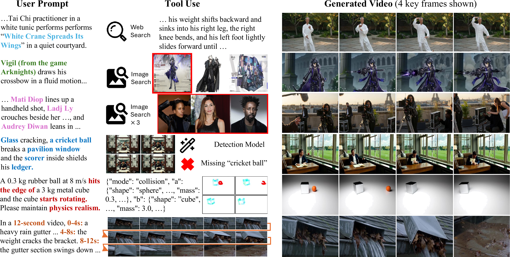
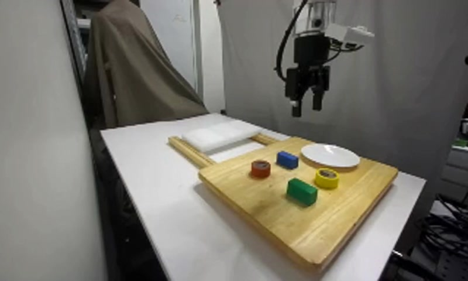
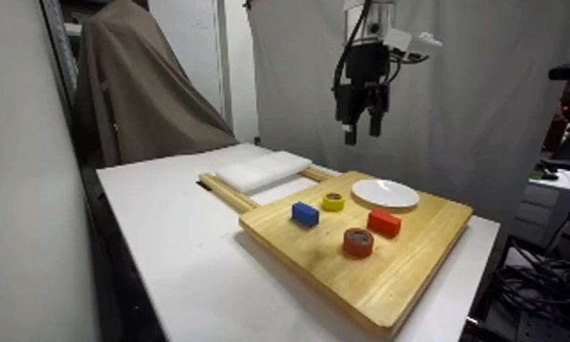
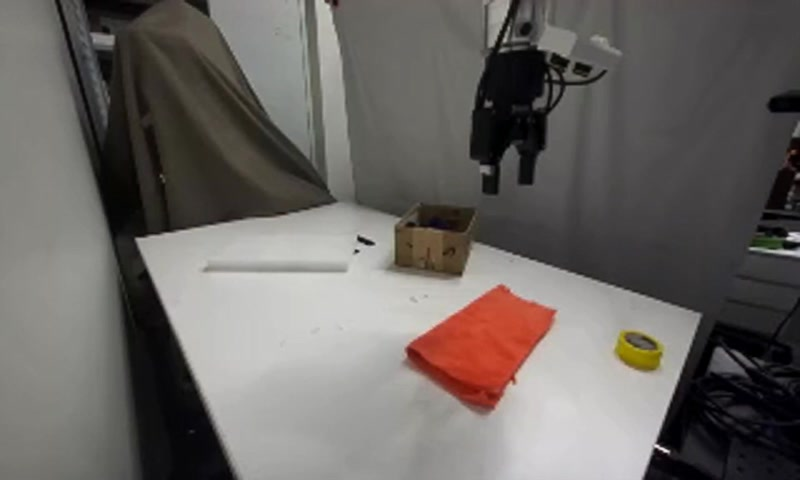
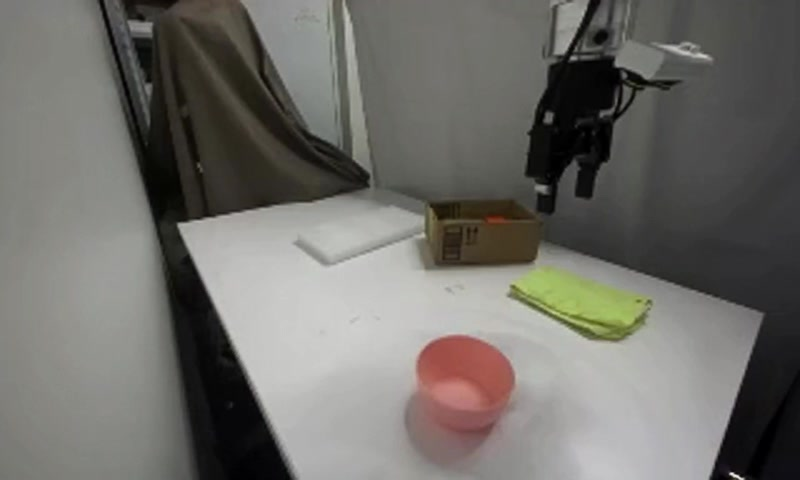

Abstract
Recent advances in video generative models have enabled high-fidelity, temporally coherent video generation. However, these models often struggle to satisfy prompts requiring specialized knowledge, specific identities, physical consistency, or ordered events. In this paper, we present VideoGen-Agent, a multimodal agent trained through multitask agentic reinforcement learning to use external tools for video generation. The agent coordinates augmentation, generation, and verification tools through multi-turn interactions, using the prompt and intermediate observations to guide its decisions. We train a shared policy on a category-balanced dataset spanning six tasks. Supervised fine-tuning on teacher-generated trajectories establishes tool-use behavior, which is then refined through reinforcement learning. A category-aware hybrid reward evaluates tool-call validity, task-appropriate tool use, and generated video quality. We further introduce VABench, a held-out benchmark of 600 prompts designed to evaluate video generation agents across six capability categories: procedural knowledge, single- and multi-entity identity preservation, physical consistency, scene composition, and multi-shot temporal structure. On VABench, VideoGen-Agent improves over its base video generator by 19.1 points, from 56.5 to 75.6. Upgrading the generation tools further raises the score to 86.1 without additional agent training. In a paired human evaluation, raters prefer VideoGen-Agent with Toolset 1 over its underlying standalone text-to-video generator in 84.3% of comparisons. These results support learning tool use across video-generation tasks and show that the trained agent can benefit from subsequent advances in generation tools.
Method
VideoGen-Agent formulates video generation as a multi-turn tool-use problem. Given a prompt, the agent sequentially decides whether to seek additional context, generate a video candidate, or verify and refine an intermediate result. Tools are organised into three functional groups:
1 · Augmentation
Text web search, image search, and code-based physical simulation ground generation in external knowledge and controllable priors.
2 · Generation
A family of video generators with different conditionings: T2V, I2V, motion-conditioned, and (multi-) reference-image-to-video.
3 · Verification
Open-vocabulary detection and depth estimation inspect generated videos for subject localisation, spatial relations, and geometric consistency.

Training
Starting from Qwen3-VL-8B-Instruct, we train on 16K teacher trajectories from Gemini 3.1 Pro and Claude Opus 4.7, then apply multitask GRPO on a separate set of 8K prompts. The 24K prompts span six task categories. The hybrid reward combines tool-call validity, category-specific video quality, and task-appropriate tool use, with weights 0.1, 0.5, and 0.4. Group-relative advantage normalization is followed by task-level normalization.
SFT uses two epochs with a learning rate of 5 × 10−5; RL uses one epoch at 10−6 and six usable rollouts per prompt. Failed action spans are masked during SFT. During RL, trajectories that fail because of external tool errors are resampled before group statistics are computed.
VABench
VABench is a held-out benchmark designed to evaluate video generation agents on complex tasks across six capabilities, with 600 prompts and 100 per category. Prompts undergo repetition checks, VLM filtering, and manual selection. Evaluation uses Gemini 3.1 Pro with the same category-specific rubrics and weights as the RL video reward; all 600 prompts contribute to the reported means.
Procedural Knowledge (PK)
Named techniques / processes whose execution depends on specific motion details.
Single-Entity Identity (SI)
One named subject, such as a game character, celebrity, landmark, or branded object; visual identity must be preserved across the clip.
Multi-Entity Identity (MI)
Multiple named subjects; identity preservation under interaction.
Physics Simulation (PS)
Quantitative physical motion under specified initial conditions, restricted to collisions and falling/dropping in training and VABench.
Compositional Scene (CS)
Multi-subject composition, interactions, and spatial relations using visually canonical subjects to focus on scene structure.
Multi-Shot (MS)
Two or three equal-duration shots, each at most five seconds, with all requested phases depicted in the correct temporal order.
Per-category results on VABench
Scores are the Gemini 3.1 Pro judge mean in [0, 100], averaged within each category. Higher is better. Overall is the unweighted mean across all six categories. Bold marks the best score and underline marks the second best.
| Model | PK | SI | MI | PS | CS | MS | Overall |
|---|---|---|---|---|---|---|---|
| Open-source baselines | |||||||
| CogVideoX-5B | 38.9 | 48.3 | 37.8 | 41.6 | 50.4 | 30.8 | 41.3 |
| Mochi-1 | 41.9 | 49.6 | 37.8 | 48.4 | 55.4 | 28.3 | 43.6 |
| HunyuanVideo 13B | 37.5 | 29.3 | 17.6 | 31.6 | 31.5 | 31.1 | 29.8 |
| Wan 2.1-T2V-14B | 42.0 | 46.2 | 39.5 | 49.5 | 60.8 | 62.0 | 50.0 |
| Commercial baselines | |||||||
| Kling 3.0 | 64.4 | 62.3 | 55.2 | 56.7 | 86.5 | 66.1 | 65.2 |
| Hailuo 2.0 (MiniMax) | 63.0 | 58.6 | 52.4 | 55.1 | 86.0 | 67.6 | 63.8 |
| Seedance 1.0 Pro Fast | 55.5 | 51.4 | 44.2 | 46.2 | 74.6 | 66.8 | 56.5 |
| Seedance 2.0 Fast | 78.0 | 75.0 | 69.0 | 60.2 | 87.8 | 68.9 | 73.2 |
| Ours | |||||||
VideoGen-Agent — RL (Toolset 1)?Toolset 1 — models used
|
80.4 | 75.1 | 65.3 | 67.9 | 83.1 | 81.7 | 75.6 |
VideoGen-Agent — RL (Toolset 2)?Toolset 2 — models used
|
92.1 | 83.2 | 86.7 | 69.2 | 90.7 | 94.6 | 86.1 |
Toolset 1 is the training-time stack VideoGen-Agent was optimised against. Toolset 2 swaps in stronger generation tools at inference time without any additional agent training, demonstrating that the trained agent benefits from subsequent advances in generation tools. Hover the small ? at the top-right of each Toolset name for the exact models (with links).
Ablation study
Rows (i)–(iv) and (viii) compare vanilla T2V, prompt rewriting, a fixed agentic workflow, SFT, and RL under the Toolset 1 configuration. Rows (v) and (vi) remove individual reward components; row (vii) reports the single-task variant. Overall is the unweighted mean across all six categories. The highest score in each column is bolded.
| Variant | PK | SI | MI | PS | CS | MS | Overall |
|---|---|---|---|---|---|---|---|
| (i) Vanilla T2V (Seedance 1.0 Pro Fast) | 55.5 | 51.4 | 44.2 | 46.2 | 74.6 | 66.8 | 56.5 |
| (ii) Qwen3-VL-8B-Instruct + Prompt Rewriting + Toolset 1 | 57.3 | 51.5 | 45.3 | 44.6 | 77.2 | 68.1 | 57.3 |
| (iii) Qwen3-VL-8B-Instruct + Fixed Workflow + Toolset 1 | 63.3 | 59.6 | 56.3 | 56.3 | 75.5 | 73.8 | 64.1 |
| (iv) VideoGen-Agent-SFT-Toolset 1 | 72.7 | 68.1 | 58.6 | 60.4 | 79.2 | 76.3 | 69.2 |
| (v) VideoGen-Agent-RL-Toolset 1 — w/o VLM reward | 76.4 | 74.3 | 63.9 | 66.5 | 80.1 | 78.7 | 73.3 |
| (vi) VideoGen-Agent-RL-Toolset 1 — w/o tool reward | 74.3 | 70.2 | 60.2 | 60.9 | 82.7 | 78.8 | 71.2 |
| (vii) VideoGen-Agent-RL-Single Task | 85.5 | 74.5 | 65.9 | 67.3 | 84.4 | 80.3 | 76.3 |
| (viii) VideoGen-Agent-RL-Toolset 1 (Full) | 80.4 | 75.1 | 65.3 | 67.9 | 83.1 | 81.7 | 75.6 |
The fixed-workflow baseline uses the same Qwen3-VL-8B-Instruct backbone and Toolset 1 without task-specific training. For MI, the backbone receives the required entity count N, lists N names, retrieves one reference image per entity, and calls video_gen_multiple_reference for reference-to-video generation. For CS, ReAct is capped at three iterations; other tasks execute their prescribed workflow once. The paper appendix details these task-specific budgets and the single-task training setup.
Prompt rewriting improves the overall score from 56.5 to 57.3, while the fixed workflow reaches 64.1. SFT further improves performance to 69.2, and RL adds 6.4 points to reach 75.6, with gains across all six categories. The advantage over the fixed workflow supports the usefulness of training under these task-specific baseline budgets.
Removing the VLM reward reduces the overall score to 73.3, while removing the tool reward lowers it to 71.2; both ablations degrade all six categories. Single-task agents undergo SFT and then RL using only their category-specific subsets, with other settings unchanged. They achieve 76.3 overall, 0.7 points above the shared multitask agent. Single-task training performs better on PK, MI, and CS, while multitask training leads on SI, PS, and MS and supports all six tasks with a single policy at comparable overall performance.
Generalization to an unseen task combination
Procedural Identity (PI) combines procedural knowledge with single-entity identity. We construct 100 held-out prompts from 20 specialized actions or processes and 20 named entities, disjoint from SFT, RL, and VABench prompts. No training prompt combines these requirements. The system prompt provides general composition guidance, but no explicit workflow for this combination.
| Model | Search-Text (%) | Search-Image (%) | Both (%) | Score |
|---|---|---|---|---|
| Qwen3-VL-8B-Instruct + Fixed Workflow | 100 | 100 | 100 | 72.4 |
| VideoGen-Agent-SFT-Toolset 1 | 58 | 78 | 40 | 57.6 |
| VideoGen-Agent-RL-Toolset 1 | 88 | 96 | 84 | 73.2 |
Without additional training on PI, the RL agent improves over SFT and scores close to the explicitly composed fixed workflow. The fixed baseline executes Search-Text, Search-Image, and reference-conditioned generation once with Toolset 1; its generation-call count is not matched to the RL trajectory. Invocation rates record whether a tool was called at least once, not whether both task requirements were satisfied.
Human evaluation and judge validation
Human preference: four raters compare VideoGen-Agent-Toolset 1 with Seedance 1.0 Pro Fast on 100 randomly sampled VABench video pairs, with no tie option. Across 400 judgments, the preference rate for Toolset 1 is 84.3%, rounded to one decimal place.
Judge–human agreement: a separate study uses 100 pairs per category (600 total), balanced across the strongest standalone baseline, SFT, and RL. Three blinded raters independently assess each pair, and Gemini 3.1 Pro agrees with their majority preference on 92.0% of pairs. Equal VLM scores trigger a separate forced-choice comparison under the same rubric; these choices are used for agreement, not to replace benchmark scalar scores.
| Agreement (%) | PK | SI | MI | PS | CS | MS | Overall |
|---|---|---|---|---|---|---|---|
| Gemini 3.1 Pro vs. human majority | 72 | 98 | 100 | 94 | 88 | 100 | 92.0 |
Agreement is lowest on procedural knowledge (PK), which remains a challenge for the judge. Agreement on the other five categories ranges from 88% to 100%.
Sample videos across categories
Six prompts, one per task category. Left: Seedance 1.0 Pro Fast single-pass baseline. Middle: Seedance 2.0 Fast single-pass baseline (same prompt, stronger backend, still one call). Right: VideoGen-Agent (ours) — the final clip from the agent trajectory.
An elderly Tai Chi practitioner in a white tunic performs 'White Crane Spreads Its Wings' in a quiet courtyard.
Vigil (from the game Arknights) draws his crossbow in a fluid motion, cloak billowing as he fires a bolt trailing dark energy, his single visible eye narrowing while architecture crumbles behind him.
On a sunny Paris rooftop terrace at golden hour, a young actor performs in front of the camera as Mati Diop adjusts the cinema camera, Ladj Ly crouches beside the video-village monitor pointing at the playback, and Audrey Diwan leans over his shoulder pointing at the same screen to discuss the take.
Glass cracking, a cricket ball breaks a pavilion window and the scorer inside shields his ledger.
In a 12-second video, 0-4s: a heavy rain gutter clogged with leaves and overflowing. 4-8s: the weight cracks the bracket. 8-12s: the gutter section swings down and dumps water and leaves on the walkway.
A 0.3 kg rubber ball at 8 m/s hits the edge of a 3 kg metal cube and the cube starts rotating. Please maintain physics realism.
Robotic manipulation with an additional tool family
Starting from the RL-trained checkpoint, we fine-tune the policy on 1,000 additional robotic-manipulation examples. Given an input image and instruction, the agent calls π0.5 to predict a joint-action trajectory and passes the actions to Ctrl-World to generate a video. These qualitative examples show that the fine-tuned policy can invoke the two tools in sequence. This robotics checkpoint is separate from the checkpoint evaluated on the six video-generation tasks.
The four examples cover placing a blue or red block in a white plate, folding a towel, and moving a towel from right to left. Columns show the prompt, input image, ground-truth recording, VideoGen-Agent output, and Wan 2.5 I2V output. The I2V baseline uses the same initial image and explicitly names a robotic arm gripper as the acting subject.
| Prompt | I2V input | Ground truth | VideoGen-Agent (ours) | Wan 2.5 I2V |
|---|---|---|---|---|
| Pick & Placepick up the blue block and place in white plate |  |
|||
| Pick & Placepick up the red block and place in white plate |  |
|||
| Towel Foldfold the towel |  |
|||
| Wipe Tablemoving the towel from right to left |  |
Ground-truth recordings and agent-generated clips are 320×192 at 4 fps. Wan 2.5 I2V clips are 1238×744 at 24 fps, using an 800×480 input derived from the same initial frame. Ground-truth clips last 20.5–29.5 seconds, agent clips 12–15 seconds, and baseline clips approximately 5 seconds; playback is not temporally aligned. Full fields of view are preserved and resized only for display. These examples do not constitute a controlled quantitative evaluation of robotic task success or physical robot execution.